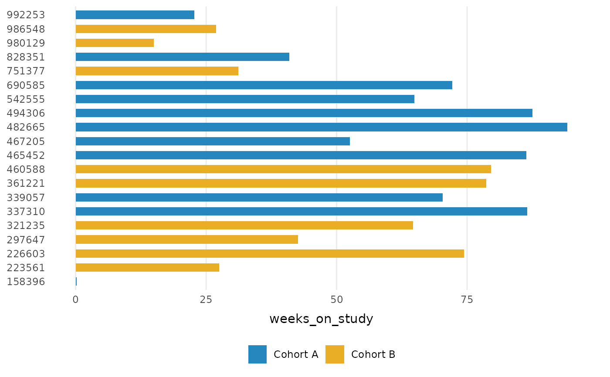

Color and fill scales built on a reordered Okabe-Ito palette (colorblind-safe, 8 colors), and
a shape scale of legible symbols (8 shapes, solid first). The fill scale
uses a slight tint of the palette so that dark event markers stand out
against the bars; the color scale keeps the full-strength hues. These are
applied automatically by geom_swimlane(); use them directly to style
additional layers, or replace them with any other discrete scale.
Usage
scale_fill_swimlane(...)
scale_colour_swimlane(...)
scale_color_swimlane(...)
scale_shape_swimlane(..., values = NULL)Arguments
- ...
Arguments passed to
ggplot2::discrete_scale().- values
Optional vector of shapes for
scale_shape_swimlane(), named by level to pin statuses to shapes (as inggplot2::scale_shape_manual()). Defaults to the built-in palette.
Details
By default shapes are assigned in factor-level order, so two plots with
different status levels assign different shapes to the same status. Pass a
named values vector to scale_shape_swimlane() to pin each status to a
shape across plots.
Examples
library(ggplot2)
ggplot(patient_disposition) +
geom_swimlane(subject, weeks_on_study, cohort) +
theme_swimlane()
